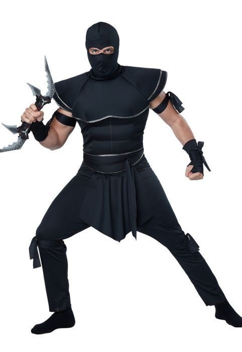
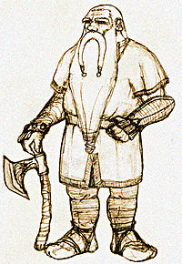

Ninja
Najlepsza klasa dla początkujących. Posiada więcej szans na trafienie krytyczne.
- Siła: 3
- Zwinność: 10
- Charyzma: 5
- Inteligencja: 12
- Szczęście: 10

Gorzelnik
Kolejna najlepsza klasa dla początkujących. Produkty alkoholowe działają dłużej. Może produkować alkohol.
- Siła: 5
- Zwinność: 5
- Charyzma: 5
- Inteligencja: 5
- Szczęście: 5
Pancernik
Następna najlepsza klasa dla początkujących. Posiadasz drugi pasek zdrowia który napełniasz owocami przed walką. Pasek ma wartość 50% twojego zdrowia.
- Siła: 10
- Zwinność: -5
- Charyzma: 10
- Inteligencja: 3
- Szczęście: 0